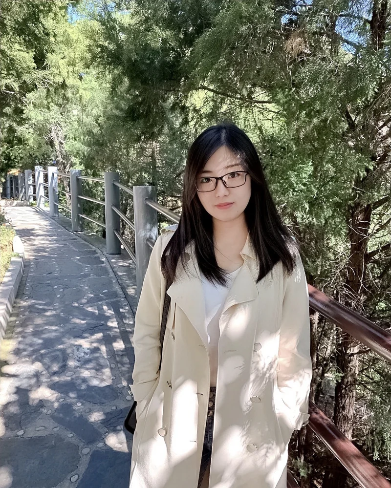

Dr. Xiuzhen Guo
Assistant Professor (Tenure-Track)
Director of
Wireless Intelligence for Networked and Embodied Things (WiNet) Lab
College of Control Science and Engineering
Zhejiang University, China
Email: guoxz@zju.edu.cn
About Me
I am an Assistant Professor at Zhejiang University (ZJU), where I lead the Wireless Intelligence for Networked and Embodied Things (WiNet) Lab.
Our group studies Wireless Intelligence, focusing on a central question: How can wireless systems connect, sense, and interact with the physical world intelligently and efficiently? Much like human intelligence, future wireless systems should continuously perceive their surroundings, exchange information, and adapt to changing environments. This vision drives our research in wireless networks, battery-free IoT, wireless sensing, physical computing, embodied AI, and software-hardware co-design.
I received my Ph.D. from the School of Software, Tsinghua University, in 2021. I received the National Natural Science Foundation of China Excellent Young Scientists Fund (Category B, formerly the Excellent Young Scientists Fund) and the Zhejiang Provincial Natural Science Foundation Distinguished Young Scholars Fund. I received the ACM China Rising Star Award, the AIoTSys Young Scientist Award, and the ACM MobiCom 2024 Best Paper Award. I was named among Stanford University's World's Top 2% Scientists.
You can find me on: [ Google Scholar ]
Join My Lab
Please visit the WiNet Lab contact page for current opportunities.